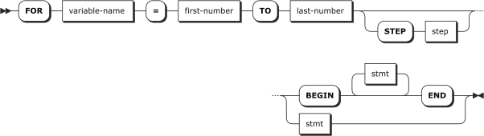

FOR Statement
Executes the provided statements while incrementing or decrementing a counter variable at each iteration.
The loop
may be terminated without regard to the counter by using the BREAK statement.
The current iteration of the loop can be abandoned and the next iteration of the loop started by using the
CONTINUE statement.Syntax

Arguments
- variable-name (variable name)
The name of the counter variable. The variable
name must being with an at sign (@), dollar sign ($), or colon (:). The variable
need not be previously declared; the FOR statement acts as a variable declaration if needed. This variable
will receive an integer value that changes with each iteration of the loop.
- first-number (integer)
The value of the counter variable on the first
iteration of the loop.
- last-number (integer)
The loop stops if the counter steps past this value.
- step (integer, optional)
The number to add to the counter variable on
each iteration. If first-number ≤ last-number
then the default step is 1, otherwise the default step is -1.
- stmt (statement)
The statements to execute on each iteration of the loop. If
more than one stmt is desired, the BEGIN and END
keywords must be used.
Examples
FOR @counter = 1 TO 10
PRINT @counter;
Prints the numbers 1 to 10 (inclusive)
in increasing order.FOR @counter = 10 TO 1
PRINT @counter;
Prints the numbers 10 to 1 (inclusive)
in decreasing order.FOR @counter = 1 TO 10 STEP 2
PRINT @counter;
Prints the odd numbers 1 to
9 (inclusive) in increasing order.